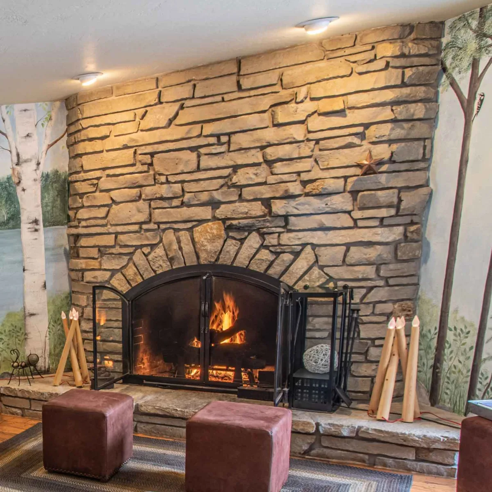

Open Hearth Lodge
Sister BayNo dog-friendly room shown반려견 동반 객실 표시 없음
A comfortable family stay, with an indoor pool, whirlpool, breakfast, and outdoor fireplaces. The dog wing exists, but no dog-friendly room appeared for the requested night.실내 수영장, 월풀, 조식, 야외 벽난로를 갖춘 가족 숙소입니다. 반려견 동반 객실 구역은 있지만 요청한 날짜 검색 결과에는 나오지 않았습니다.
- Pets반려동물
- $15 per dog / night. A designated dog-friendly room is required.반려견 1마리당 1박 $15. 반려견 동반 전용 객실을 예약해야 합니다.
- One night1박 조건
- Live search for two adults, October 31–November 1: five room types shown, all explicitly marked DOGS NOT ALLOWED. No dog-friendly room verified online.성인 2명, 10월 31일–11월 1일 실시간 검색에서 다섯 객실 유형이 나왔으나 모두 반려견 동반 불가로 표시되었습니다.
- Room to check확인할 객실
- Check the dog-friendly two-queen rooms first; confirm the family’s occupancy.반려견 동반 가능한 퀸 침대 2개 객실과 가족 인원 수용 여부를 확인하세요.
2669 S Bay Shore Drive, Sister Bay, WI 54234